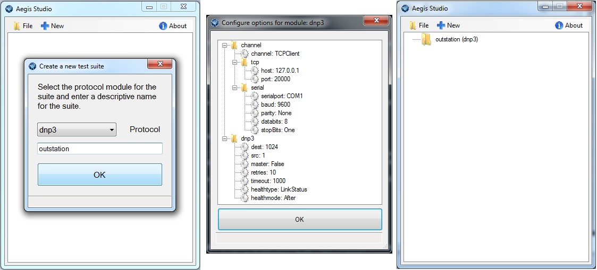
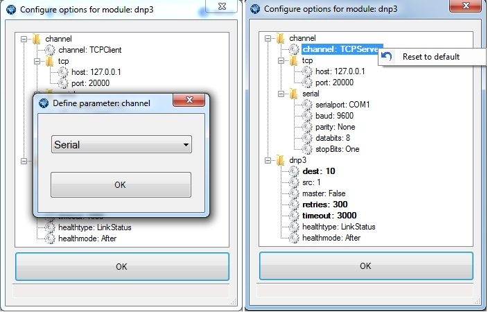

Adding suites¶
Test Suites are collections of test procedures. They act as folders in which you can organize your tests. Aegis™ comes with recommended test suites for each protocol that you can find in the tests subdirectory of your install, typically:
C:\Program Files (x86)\Automatak\Aegis Fuzzer\tests
When the Studio first starts up, the tree view is empty. You can load a configuration via the File menu or you can define an initial test suite by clicking New.
You are presented with a set of configuration options that are applied to every procedure within the suite. A description of each option is available in a tooltip by hovering over the option name.
The first grouping, channel, allows you to configure the communication channel used for every test in the suite. You can double click on any option (marked by a gear) to change the value. Values that are modified from their default settings are marked in bold. You can return any setting to its default by right clicking and selecting Reset to default.
